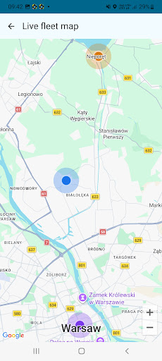
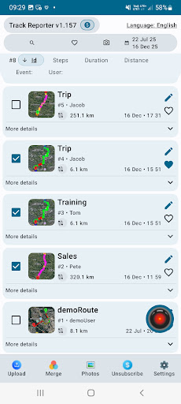
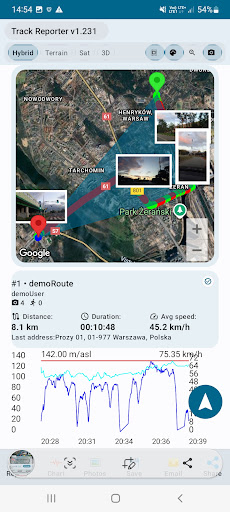

Need a clearer view of field operations? Track Reporter offers GPS fleet monitoring for people working across customer sites, inspection locations, maintenance routes and other field assignments.
Unlike a vehicle telematics platform, Track Reporter focuses on field workers and documented work: sharing live locations when enabled, reviewing selected completed routes, and checking photographs tied to field activity.
1. See Live Field Worker Locations on a Map
When a team member enables location sharing, an authorized fleet administrator can view their current shared position on the map. This makes it easier to understand where participating team members are during an active field session.

Built for opt-in team visibility
Members sign in with Google and choose when to share their locations. Live monitoring requires an internet connection and a member who is actively sharing. It is not hidden, continuous tracking of every employee.
For active route recordings, the fleet map focuses on current LIVE location markers rather than attempting to display every new GPS track point in real time.
2. Review Shared GPS Route History
After a route is completed and shared with the fleet, you can select recorded sessions and display them together on the web map. The route history helps supervisors review which areas were visited, and when a recorded field session took place.

Go beyond a location dot
View completed GPS tracks, compare selected visits and inspect the route on a map. Shared histories make field activity easier to revisit without manually reconstructing it from messages and photos.
The Android app also provides recorded-session information including time, distance and route visualization.
3. Connect Routes with Photo Evidence
Location alone cannot show what work was done. Track Reporter links photos to recorded sessions with time and GPS context, so shared routes can be reviewed alongside visual evidence from the field.

For inspection teams, maintenance technicians, delivery crews and patrols, this creates a more useful record than a simple employee location marker.
Try the Interactive 3D Route Demo
Explore a sample recorded route on the Track Reporter website. Replay the GPS journey, change the map view, inspect the timeline and see route photo thumbnails — no fleet sign-in is needed for the demo.
Open the 3D demoThe 3D demo replays a completed sample route. It is not a live employee location feed.

4. How to Start Fleet Monitoring with Track Reporter
- Install Track Reporter for Android. Set up the app and sign in with your Google account for fleet features.
- Connect your team to a fleet. Use Fleet Management to invite members and manage access.
- Enable live location sharing. A participating team member chooses to start sharing during field activity.
- Open Your Fleet. Review live shared positions and, after routes have been shared, browse completed route history and photos on the web dashboard.
Frequently Asked Questions
Can I see field workers' GPS locations in real time?
Yes, for fleet members who have enabled live location sharing. Sharing requires an internet connection and an active participating member.
Can I view completed routes from a browser?
Yes. Authorized fleet users can view routes that members have shared with their fleet in the Track Reporter web dashboard.
Does Track Reporter provide vehicle telematics or fuel monitoring?
No. Track Reporter focuses on field activity documentation, GPS routes, location sharing and photos, not vehicle hardware, engine diagnostics or fuel management.
Can I try the GPS route demo without an account?
Yes. The website includes a sample 3D route playback. Access to your own fleet data requires Google sign-in and the appropriate fleet membership.
Monitor field work — and document it.
Give field teams a practical way to share active locations and keep a visual record of completed visits with Track Reporter.